Tema CS6: Matrices en Maxima
(Soluciones de ejercicios propuestos)
1 Ejercicio 1
Ejercicio 1.1. Definir la matriz M(k)
[ 2 -1 1]
[-1 k 1]
[ 1 1 2]
para k en R.
(%i1)
M(k) := matrix([2,-1,1],[-1,k,1],[1,1,2]);
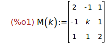
Ejercicio 1.2. Calcular el determinante de M(k).
(%i2)
determinant(M(k));
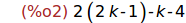
(%i3)
expand(%);
Ejercicio 1.3. Determinar los valores de k para los que M(k) es invertible.
(%i4)
solve(%,k);
Por tanto, M(k) es inversible para k distinto de 2.
Ejercicio 1.4. Calcular la inversa de M(k).
(%i5)
invert(M(k));
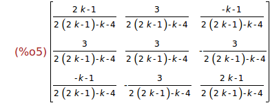
(%i6)
ratsimp(%);
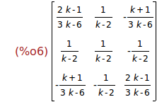
Ejercicio 1.5. Calcular los autovalores de M(k).
(%i7)
eigenvalues(M(k));
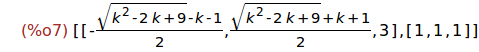
Ejercicio 1.6. Determinar los k para los que M(k) tiene autovalores múltiples.
(%i8)
[x,y,z] : %[1];
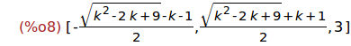
(%i9)
realroots(x=y);
(%i10)
solve(x=z);
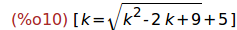
(%i11)
wxplot2d([x-z], [k,-50,50])$
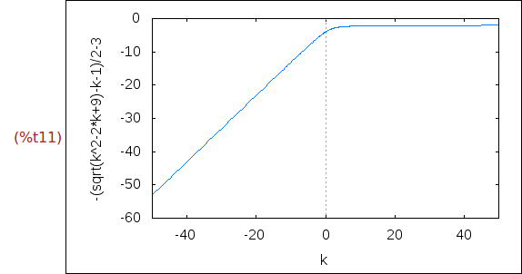
(%i12)
solve(y=z);
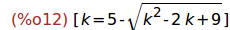
(%i13)
wxplot2d([y-z], [k,-50,50])$
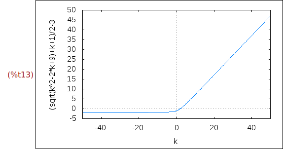
Por tanto, sólo para k=0 tiene autovalores múltiples.
2 Ejercicio 2
Ejercicio 2.1. Definir las matrices A(k) (para k en N) tales que A(k) es la
matriz triangular superior de orden n+1 cuyo término general es
a(i,j) = binomial(j-1,i-1), si i <= j
= 0, si i > j
(%i14)
a[i,j] := if i <= j then binomial(j-1,i-1) else 0$
A(n) := genmatrix(a,n+1,n+1);
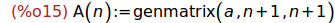
Ejercicio 2.2. Calcular las matrices A(1), A(2) y A(5).
(%i16)
A(1);
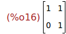
(%i17)
A(2);
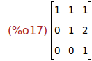
(%i18)
A(5);
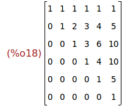
Ejercicio 2.3. Calcular las inversas de las matrices A(1), A(2) y A(5).
(%i19)
invert(A(1));
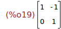
(%i20)
invert(A(2));
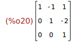
(%i21)
invert(A(5));
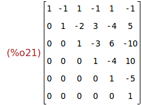
Ejercicio 2.4. Conjeturar cuál es la inversa de A(n) y definirla como B(n).
(%i22)
b[i,j] := (-1)^(i+j)*a[i,j]$
B(n) := genmatrix(b,n+1,n+1)$
B(5);
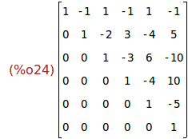
Ejercicio 2.5. Comprobar la conjetura para n entre 1 y 10.
(%i25)
apply ("and", makelist(is(invert(A(n))=B(n)),n,1,10));
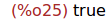
3 Ejercicio 3
El objetivo de este ejercicio ed determinar las matrices cuadradas X de orden 2
que conmutan con la matriz A definida por
[ 1 -5]
[-5 3]
Ejercicio 3.1. Escribir la matriz A definida por
[ 1 -5]
[-5 3]
(%i26)
A : matrix([1,-5],[-5,3]);
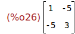
Ejercicio 3.2. Definir la matriz X cuyos términos son a,b,c,d.
(%i27)
kill(a,b,c,d)$
X : matrix([a,b],[c,d]);
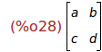
Ejercicio 3.3. Calcular M = AX − XA
(%i29)
M : A.X-X.A;
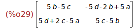
Ejercicio 3.4. Resolver el sistema lineal de 4 ecuaciones con 4 incógnitas M=0.
Indicación: Antes de resolverlo, asignarle a la variable globalsolve el valor
true.
(%i30)
globalsolve : true$
solve([M[1,1],M[1,2],M[2,1],M[2,2]]);
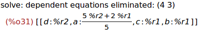
Ejercicio 3.5. Definir las matrices B que son soluciones de la ecuación M=0
(%i32)
B : matrix([(5*v+2*u)/5,u],[u,v]);
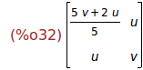
Ejercicio 3.6. Comprobar que A y B conmutan.
(%i33)
is(A.B=B.A);
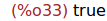